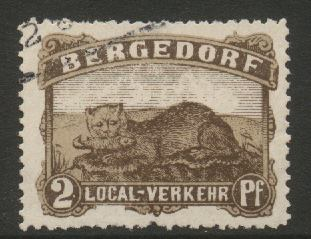

Return To Catalogue - Germany - Other local issues - Bergedorf (German state)
Note: on my website many of the
pictures can not be seen! They are of course present in the
catalogue;
contact me if you want to purchase it.
2 p red and green
Exists perforated or imperforate.

2 p brown ('Fischotter')
3 p orange (squirl)
5 p black (dog, 'Jagdhund')
10 p green (birds)
15 p brown (rabbits)
All these stamps exist perforated or imperforate.
Cancels:
(Reduced sizes)
Proofs on cardboard:
(Reduced sizes)